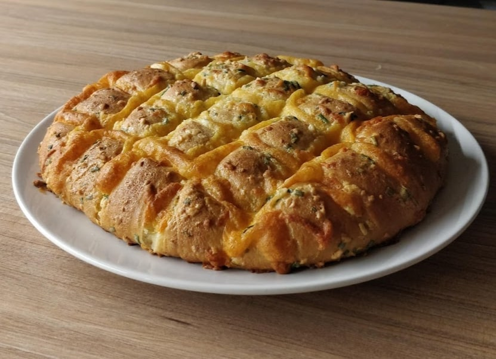

Cheese and Garlic Pull-Apart Bread

Description
Cheesy garlic bread is so simple to make with loads of cheese and that soft bread on the inside with the crunchy crust on the outside. Slice it
and pull it with all the cheese flavor and goodness in every piece. This cheesy garlic bread will be gone in minutes and taste amazing warm.
Ingredients
- 1 crusty loaf
- 1 cup shredded Mozzarella cheese
- 100g unsalted butter
- 2 large garlic cloves
- 1tbsp fresh parsley
Instructions
-
Preheat the oven to 180° C
-
Combine butter, garlic and salt in a heatproof bowl and melt in the microwave. Stir through parsley.
-
Cut the bread on a diagonal into 2cm diamonds but do not cut all the way through the bread.
-
Use your fingers or a knife to pry open each crack and drizzle in a teaspoon of butter and stuff in a pinch of cheese.
-
Brush surface with remaining butter.
-
Wrap with foil and bake for 20 minutes until the cheese has mostly melted, then unwrap and bake for 5 - 10 minutes more to make the bread nice and crusty.
-
Serve immediately.
Go back